(a) Space-based hierarchy — for local rendering. Whole model resides on the client; LODs are obtained by selecting spatial subsets at render time.
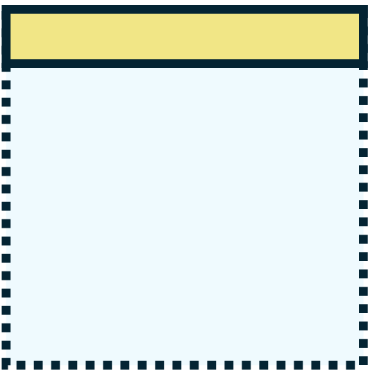
LOD 0
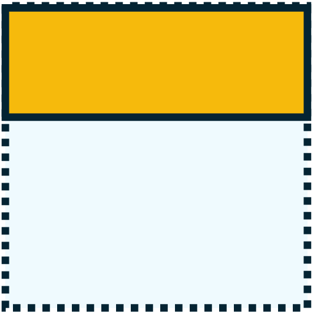
LOD 1
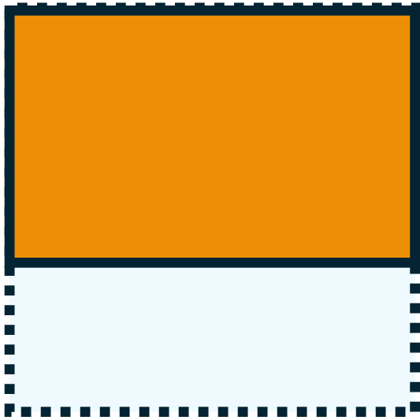
LOD 2
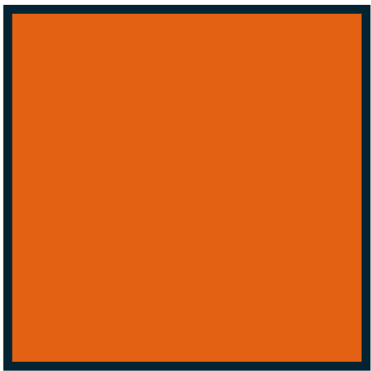
LOD 3
Streaming 3D Gaussian Splatting requires highly scalable, progressive representations. Existing progressive methods rely on discrete layering, accumulating separate splat sets for each level of detail. This structural independence between layers inherently leads to error accumulation, severe splat redundancy, and uncontrolled quality transitions.
We propose EvoGS, the first continuous-layering representation. Organized as an Evolution Tree, EvoGS generates finer details via an explicit, wavelet-inspired parent–child refinement. This empowers child nodes to structurally correct ancestral errors and yields inherently sparse, highly compressible inter-layer signals.
Extensive experiments show EvoGS eliminates splat redundancy from over 65% to under 25%. Compared to state-of-the-art baselines, it reduces transmission payload and GPU VRAM footprint by up to 2.4× and 5.5×, respectively, and achieves smooth quality transitions optimal for real-time adaptive streaming.
Immersive XR streaming faces heterogeneous devices, interactive 6DoF navigation, and dynamic bandwidth/memory budgets. A streamable 3DGS representation must therefore offer quality scalability, rendering scalability, and real-time adaptation. Existing progressive 3DGS methods all share a common construction principle — each LOD is an independent splat set trained for its target resolution. We term this discrete layering.
Discrete layering's inter-layer relationship is compositional, not evolutionary: higher layers visually mask lower-layer errors via 2D blending rather than correcting them. This compositional construction creates a cascade of problems: error accumulation, severe splat redundancy (>65% transparent ghost splats at fine LODs), uncontrolled quality transitions, and unexploitable inter-layer correlation.
(a) Space-based hierarchy — for local rendering. Whole model resides on the client; LODs are obtained by selecting spatial subsets at render time.

LOD 0

LOD 1

LOD 2

LOD 3
(b) Discrete-layered hierarchy — existing scalable streaming. Each LOD adds an independent splat set; layers share no structural relationship, producing abrupt quality jumps and ghost-splat redundancy.
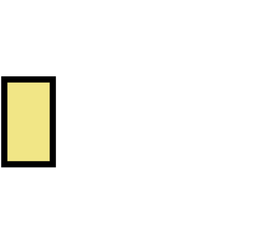
LOD 0
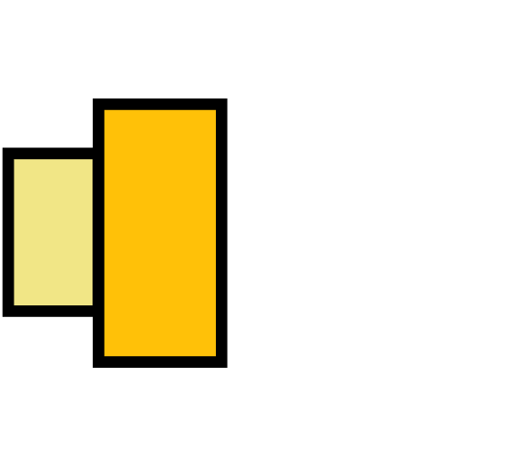
LOD 1
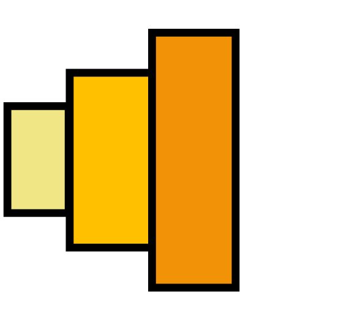
LOD 2
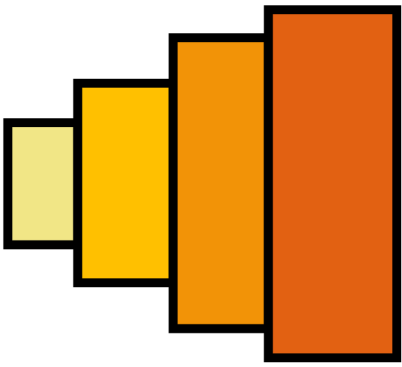
LOD 3
(c) Continuous-layered hierarchy (Ours) — each LOD is a structured refinement of the previous one via an explicit parent–child Evolution Tree. Quality improves smoothly and continuously as data arrives.
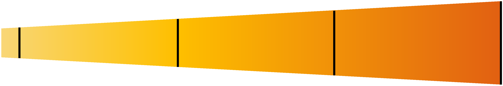
LOD 0
LOD 1
LOD 2
LOD 3
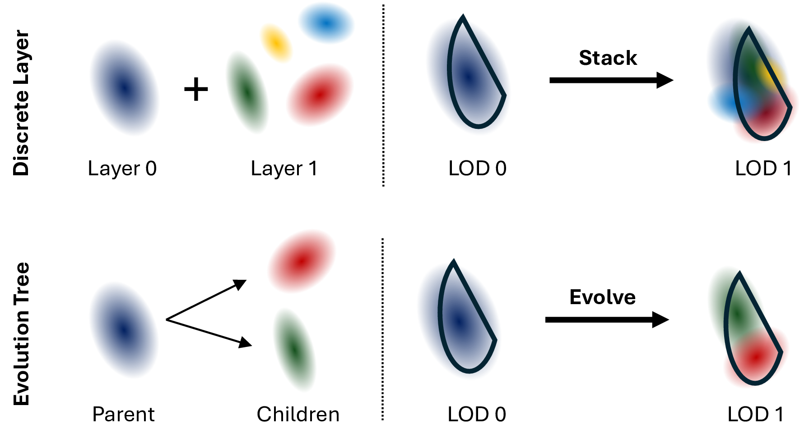
From discrete to continuous. In discrete layering (top), the splat at LOD 0 stays frozen and is always rendered at LOD 1; higher quality is achieved by stacking additional splats on top — producing redundant ghost splats.
In our Evolution Tree (bottom), the parent splat at LOD 0 evolves into child splats that replace it at LOD 1. Children structurally adapt to the finer geometry, achieving smooth quality transitions without accumulating redundant ancestors.
Let \(\boldsymbol{P}\in\mathbb{R}^D\) denote a parent splat's parameters (position, rotation, scale, opacity, SH). We evaluate four constructions for its two children \(\boldsymbol{C_1},\boldsymbol{C_2}\):
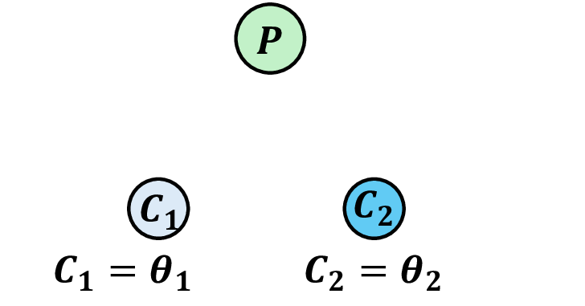
A. Independent children (\(2D\) param.)
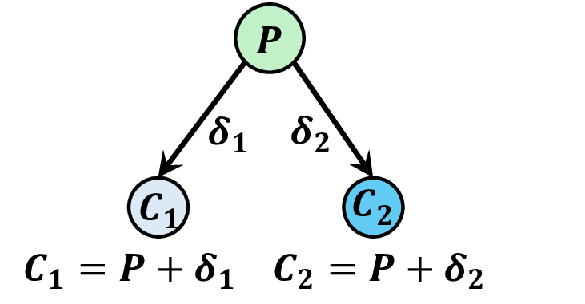
B. Independent residuals (\(2D\) param.)
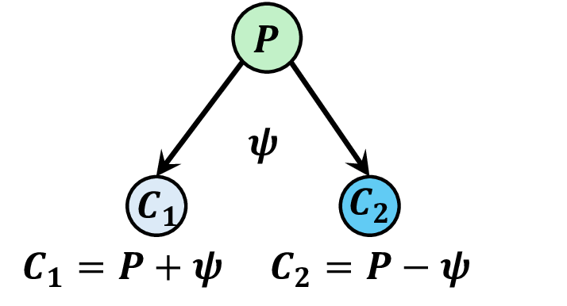
C. Symmetric collinear residual (\(D\) param.)
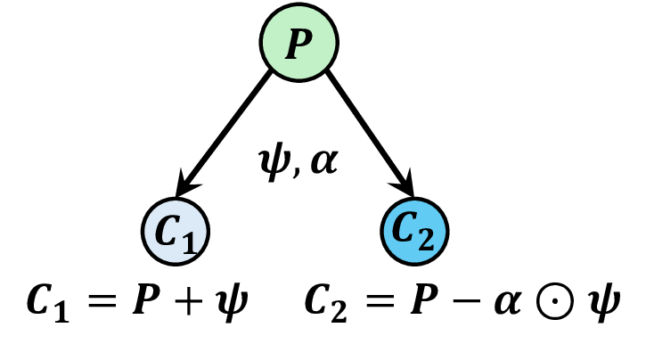
D. Asymmetric collinear residual (\(D{+}5\) param.) — ours
Options A and B place no structural constraint on parent–child proximity, so coarse renderings are unreliable and the refinement signal is unstructured. Option C enforces a symmetric collinear residual, \[ \boldsymbol{C_1}=\boldsymbol{P}+\boldsymbol{\psi},\qquad \boldsymbol{C_2}=\boldsymbol{P}-\boldsymbol{\psi}, \] which is exactly the Haar wavelet lifting scheme: \(\boldsymbol{P}\) is the approximation coefficient and \(\boldsymbol{\psi}\) the detail coefficient. This guarantees sparse refinements but the rigid equal-magnitude constraint wastes capacity on real, non-symmetric scene details.
We therefore adopt Option D, the asymmetric collinear residual: \[ \boldsymbol{C_1}=\boldsymbol{P}+\boldsymbol{\psi},\qquad \boldsymbol{C_2}=\boldsymbol{P}-\boldsymbol{\alpha}\odot\boldsymbol{\psi}, \] where \(\boldsymbol{\alpha}\in\mathbb{R}^5\) is a learned per-attribute asymmetry factor. Paralleling JPEG 2000's biorthogonal lifting over orthogonal Haar wavelets, \(\boldsymbol{\alpha}\) trades exact mean preservation for representational power while preserving wavelet sparsity (see Inter-Layer Analysis below).
The Evolution Tree consists of root nodes (baseline geometry \(\boldsymbol{P_{\text{root}}}\in\mathbb{R}^D\)), internal nodes (learned refinements \(\boldsymbol{\psi}, \boldsymbol{\alpha}\)), and leaf nodes (renderable splats). A leaf's final parameters are accumulated along its ancestral chain: \[ \boldsymbol{S} \;=\; \boldsymbol{P_{\text{root}}} \;+\; \sum_{k=1}^{\ell}\boldsymbol{s_k}\odot\boldsymbol{\psi_k},\qquad \boldsymbol{s_k}\in\{+\mathbf{1},\,-\boldsymbol{\alpha}_k\}. \]
Progressive training. The base model \(L_0\) is trained at the coarsest resolution \(\mathbf{D}_0\) and each splat becomes a root. At every subsequent level \(L_i\), gradient-driven densification splits selected leaves into two children whose \(\boldsymbol{\psi}\) and \(\boldsymbol{\alpha}\) are unfrozen, while all ancestors remain fixed. The resulting tree is unbalanced and spatially adaptive: complex regions densify deeply, smooth regions stay shallow.
Rendering. At inference, the client requests a quality level \(L_i\); the active leaf set \(\mathcal{F}_i\) is reconstructed via the equation above and passed to the standard 3DGS rasterizer. Because nodes role-swap (leaf at coarse, internal at fine), one stored tree serves all quality tiers, and spatial regions can even be rendered at mixed qualities simultaneously — structurally impossible in discrete layering.
We evaluate on Synthetic Blender, Mip-NeRF360, Tanks&Temples, and Deep Blending against Monolithic, Single, LapisGS, and L3GS. Two size metrics are reported: Storage (cumulative transmitted bytes) and Memory (rendering GPU footprint, strictly smaller than storage for EvoGS because internal-node \(\boldsymbol{\psi}, \boldsymbol{\alpha}\) are consumed during leaf reconstruction).
+0.69 dB
PSNR gain over best discrete baseline (T&T, \(L_1\))
2.4×
Less transmission payload
5.5×
Less GPU rendering memory
Each point is one scene at one quality level (SSIM vs. normalized model size). EvoGS (red stars) consistently dominates the top-left corner across all four levels; LapisGS (orange) and L3GS (purple) drift rightward as quality increases.
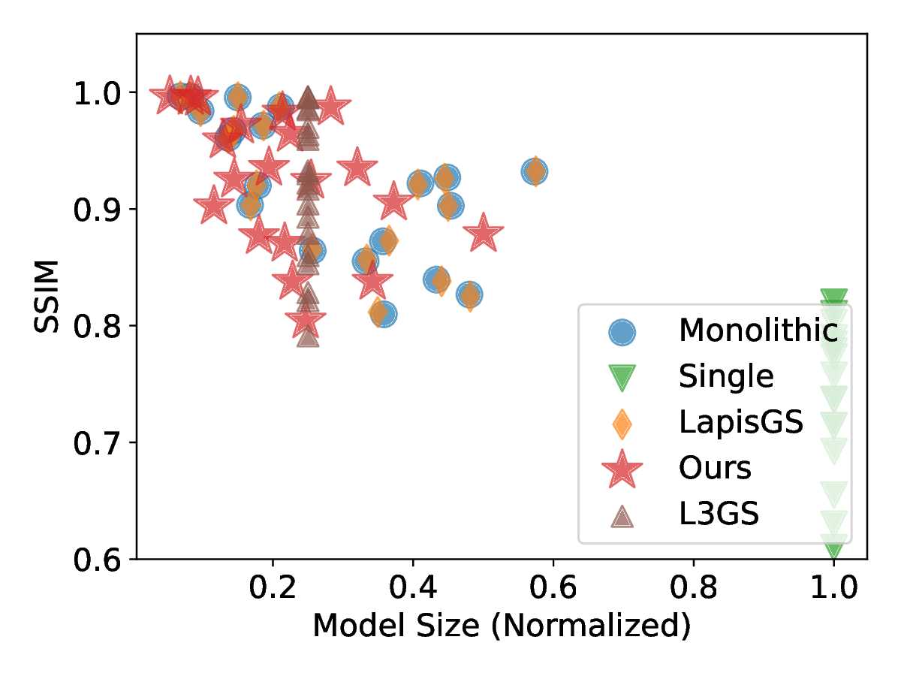
\(L_0\)
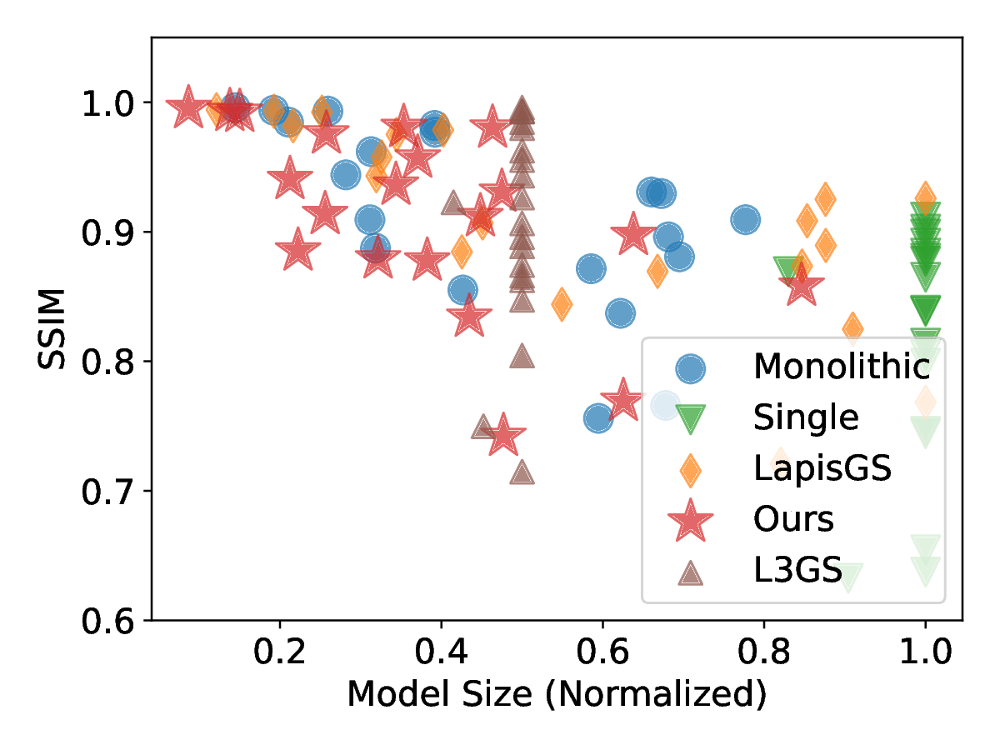
\(L_1\)
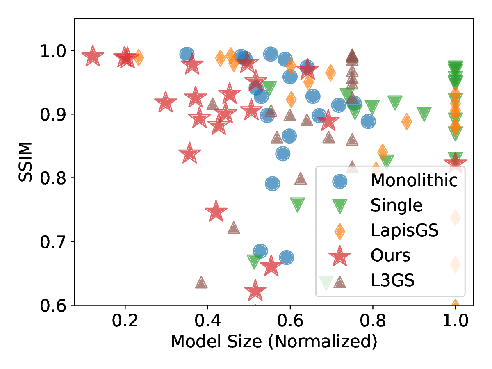
\(L_2\)
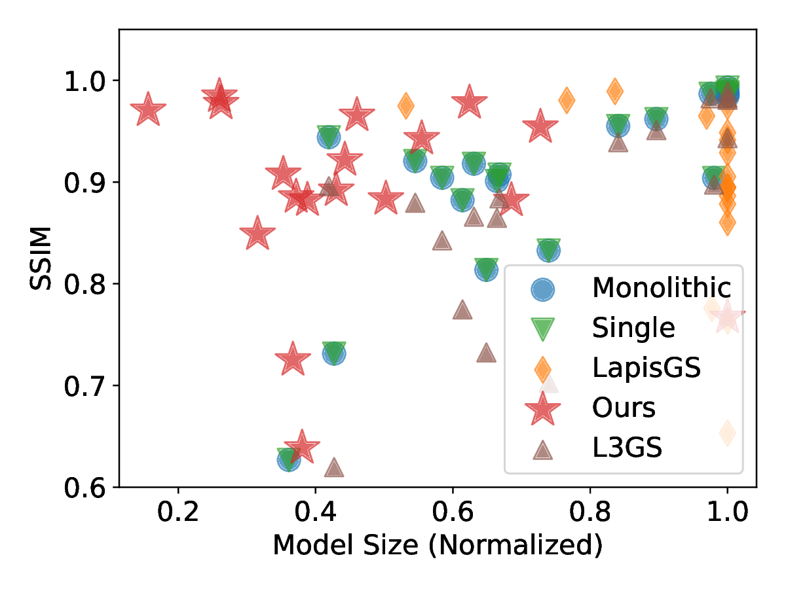
\(L_3\)
Sample renderings of Playroom at four quality levels. Switch \(L_0\)–\(L_3\) with the tabs, then drag the vertical handles to slide between methods. Monolithic is an independent full model per LOD (upper bound); Single is one full-resolution model rendered at every level; LapisGS is the discrete-layering SOTA. EvoGS (Sym.) is our symmetric ablation and EvoGS (Asym.) is our final asymmetric model. LapisGS accumulates the geometry errors from coarse layers, while EvoGS corrects ancestral errors at every level, producing coherent geometry already at \(L_0\) and scaling smoothly to high fidelity at \(L_3\).
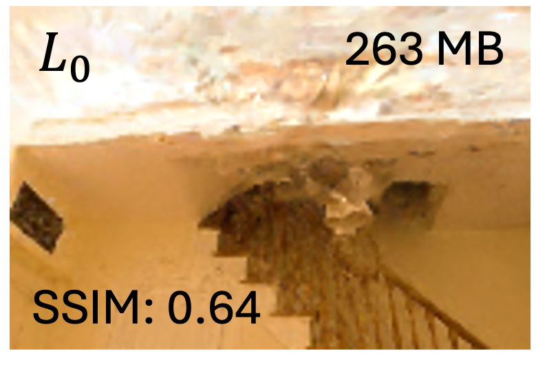
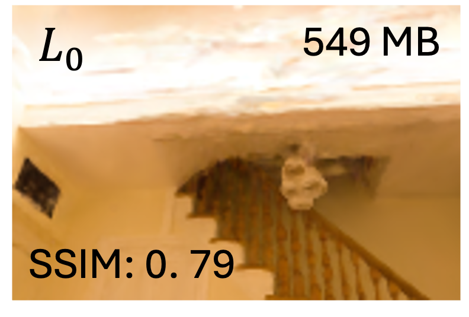
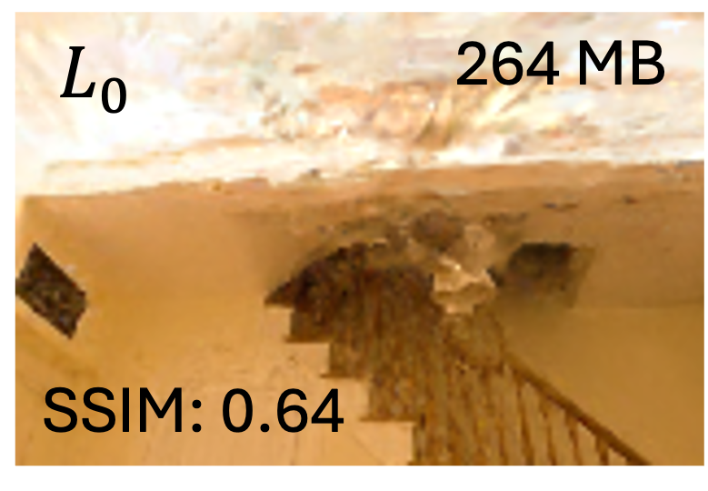
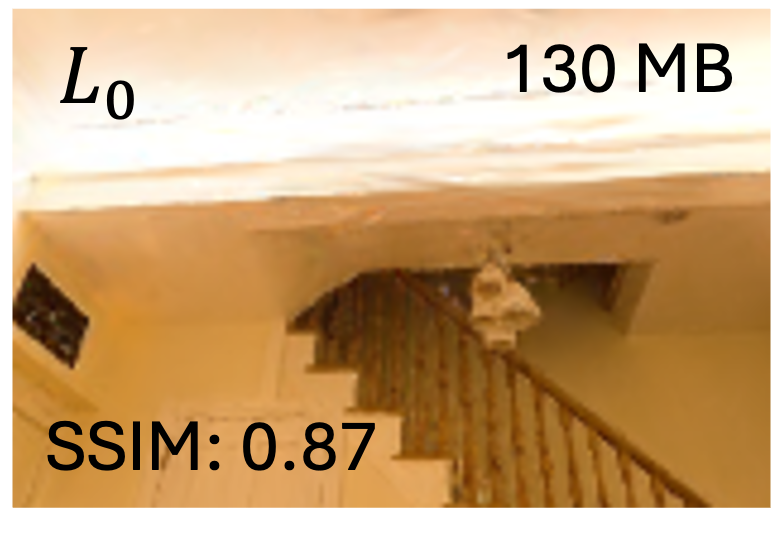
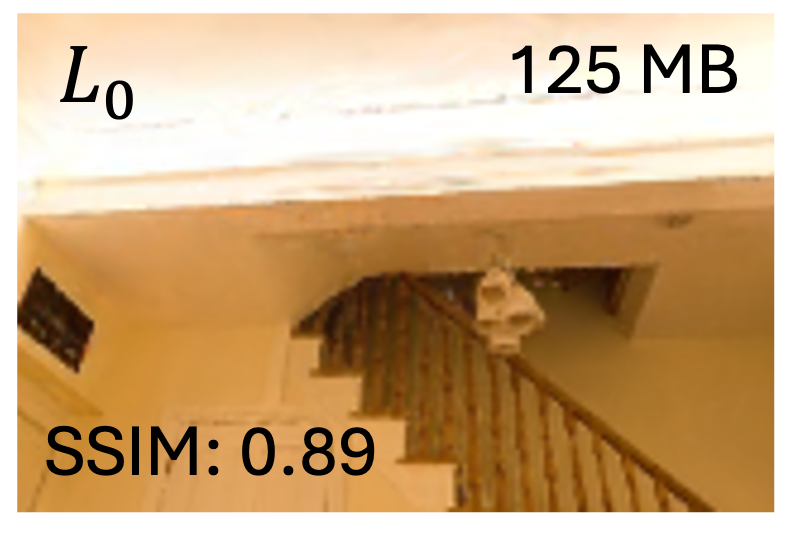
We measure the ratio of transparent splats (opacity below 0.005) at each LOD. In LapisGS, the discrete layers cannot structurally correct lower-layer errors, so the optimizer fades them out as a workaround: 93.8% of Layer 0 and 88.7% of Layer 1 splats become transparent by LOD 3, yet they still occupy storage and GPU memory.
EvoGS evolves rather than overlays splats, dropping the total transparent ratio from over 65% to under 25% at LOD 3. The symmetric variant lies in between, confirming that the rigid equal-magnitude constraint forces some children into sub-optimal positions that the optimizer must then suppress — a milder version of the LapisGS failure mode.
| \(L_0\) | \(L_1\) | \(L_2\) | \(L_3\) | |
|---|---|---|---|---|
| LapisGS | 15.9% | 46.9% | 55.6% | 65.8% |
| EvoGS (Sym.) | 14.4% | 26.0% | 33.7% | 38.9% |
| EvoGS | 12.1% | 17.0% | 21.0% | 24.9% |
Ratio of transparent splats (averaged across datasets).
We simulate progressive transmission from LOD 0 to LOD 3 and record intermediate snapshots as bytes arrive. EvoGS prioritizes splats with high refinement energy \(\|\boldsymbol{\psi}\|\); LapisGS transmits in descending opacity order.
The videos below play back the rendered view at a fixed camera as data is progressively received. LapisGS (left) shows the discrete-layering pattern — long plateaus broken by abrupt visual jumps at each LOD boundary — while EvoGS (right) refines the scene smoothly and monotonically with every received byte.
LapisGS (discrete layering, left) vs. EvoGS (continuous layering, ours, right).
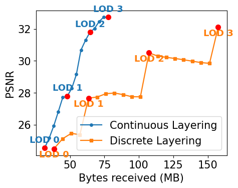
PSNR vs. received bytes on Lego. EvoGS rises monotonically; LapisGS plateaus and then steps up at each LOD boundary.
Same scene, same fixed camera, same elapsed time = same number of received bytes. Both streams start from an empty scene and end at full quality.
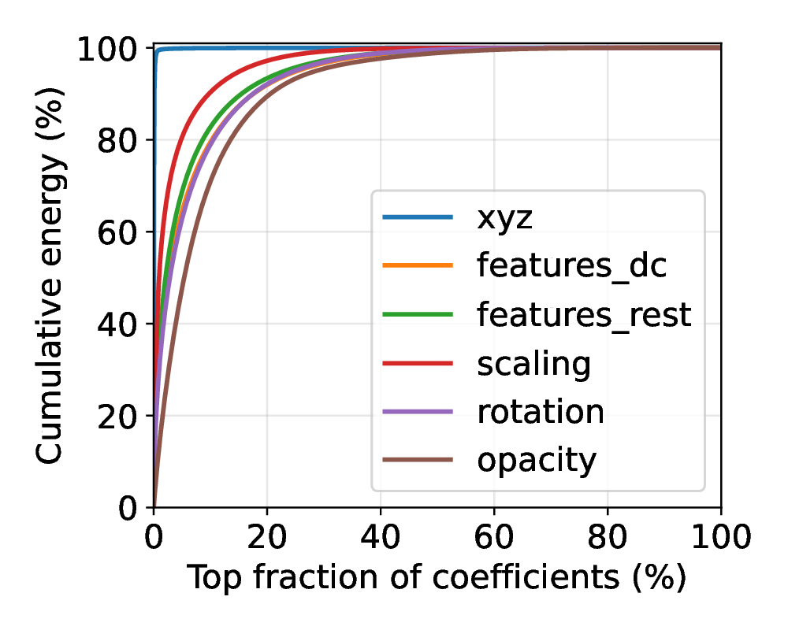
Symmetric (Option C).
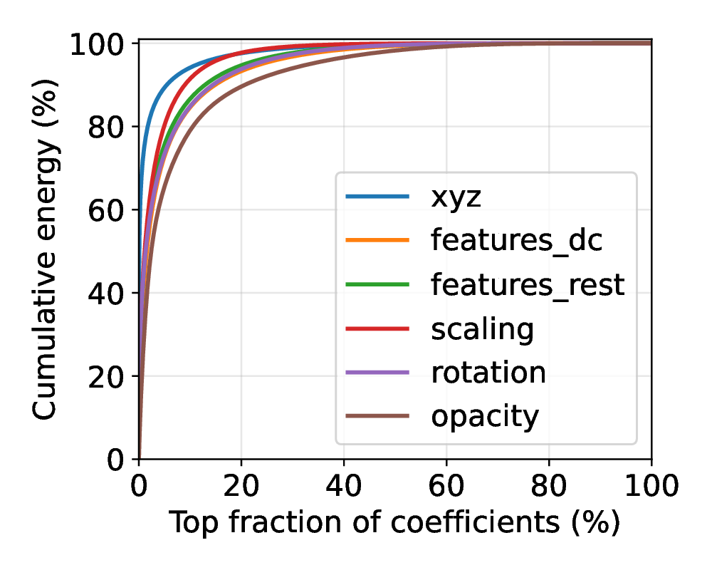
Asymmetric (Option D, ours).
In both constructions, the refinement coefficients \(\boldsymbol{\psi}\) retain wavelet sparsity: fewer than 20% of coefficients carry over 90% of the energy. This sparsity makes \(\boldsymbol{\psi}\) ideal for off-the-shelf compression. Passing EvoGS through a basic 8-bit uniform quantization + zstd pipeline shrinks Deep Blending \(L_3\) from 347.4 MB to 91.8 MB — just 11.5% of LapisGS — with a negligible PSNR drop of 0.10 dB.
| Method | \(L_0\) | \(L_1\) | \(L_2\) | \(L_3\) | ||||
|---|---|---|---|---|---|---|---|---|
| PSNR | Stor. | PSNR | Stor. | PSNR | Stor. | PSNR | Stor. | |
| LapisGS | 29.13 | 152.3 | 29.00 | 325.5 | 28.47 | 544.2 | 27.64 | 801.8 |
| EvoGS | 29.66 | 105.2 | 29.55 | 188.7 | 28.86 | 276.6 | 27.73 | 347.4 |
| EvoGS w/ Comp. | 29.53 | 42.9 | 29.32 | 59.3 | 28.59 | 76.5 | 27.63 | 91.8 |
PSNR (dB) and cumulative transmitted size (MB), averaged across all datasets.
@article{shi2026evogs,
author = {Shi, Yuang and Gasparini, Simone and Morin, G\'eraldine and Ooi, Wei Tsang},
title = {{EvoGS}: Constructing Continuous-Layered {Gaussian Splatting} with Evolution Tree for Scalable 3D Streaming},
year = {2026},
}EvoGS builds on our prior work on layered 3DGS streaming:
@inproceedings{DBLP:conf/3dim/ShiMGO25,
author = {Yuang Shi and
G{\'{e}}raldine Morin and
Simone Gasparini and
Wei Tsang Ooi},
title = {{LapisGS}: Layered Progressive {3D Gaussian} Splatting for Adaptive Streaming},
booktitle = {International Conference on 3D Vision, 3DV 2025, Singapore, March
25-28, 2025},
pages = {991--1000},
year = {2025},
doi = {10.1109/3DV66043.2025.00096},
}